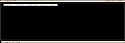

ImSekR
Status: Abandonné (depuis 2005)
Présentation :
ImSekR est un de mes anciens projets dont le développement d’une beta version est déjà achevé.
J’ai commencé à réaliser ce projet afin de découvrir les possibilités offertes par la librairie ncurses, ce qui explique une programmation un peu “sale” au niveau de la gestion de l’interface. Le reste du code n’est pas forcement parfais non plus, mais il reste intéressant à lire.

Pour récupérer les sources : Download
{kind=link}
Description :
ImSekR watches network traffic, and picks out and displays Instant Messenger communications and various info for every users using it.
ImSekR can be used with ncurses GUI or in console mode, can read/write pcap files and log activities.
ImSekR est un “sniffer” réseau capable d’intercepter et d’afficher des communications de messageries instantanées (seul MSN est pour l’instant supporté), ainsi que quelques informations supplémentaires (contacts, etc…), pour chaque utilisateur présent sur un réseau local.
ImSekR peut être utilisé avec une interface en ncurses ou directement en mode console, peut lire/écrire des fichiers au format pcap ainsi que des journaux d’activités.
ImSekR is programed in C and you will need libpcap, libncurses, libpthread, and libiconv. On most Linux distributions these are available as packages.
ImSekR est programmé en C et utilise les librairies libres libpcap, libncurses, libpthread et libiconv. Sur la plupart des distributions, ces librairies sont disponibles sous la forme de paquets.

ImSekR is licensed under the BSD License
ImSekR est distribué sous licence BSD